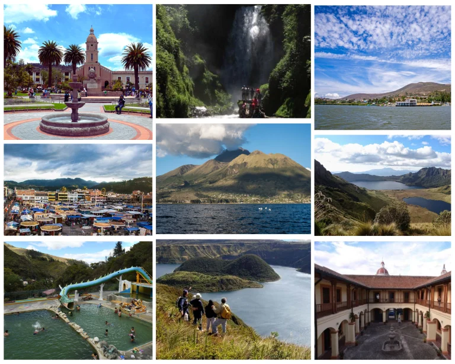

Misión
Promover Ibarra y Yahuarcocha mediante turismo responsable, experiencias seguras y trabajo justo con la comunidad local.
No somos de paso
Somos una agencia nacida en Ibarra para compartir lo que amamos sin quitarle su esencia.
Nuestra historia
Yahuarcocha Viva nació para conectar a visitantes con las personas, paisajes y tradiciones de Ibarra.
Desde 2022 reunimos guías, artesanos, cocineras y familias anfitrionas para crear experiencias responsables que ponen a la comunidad en el centro.
Nuestro propósito
Promover Ibarra y Yahuarcocha mediante turismo responsable, experiencias seguras y trabajo justo con la comunidad local.
Ser una agencia referente de Imbabura por su servicio cercano, conservación del patrimonio y amor por el territorio.
Comunidad, autenticidad, respeto, seguridad, cuidado ambiental y compromiso con los emprendimientos locales.

Información adicional